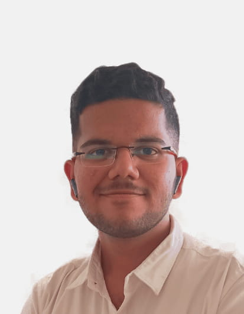

Kartik Jagtap
I work on automatic speech recognition, self-supervised speech representations, and conversational AI. At the Language Technologies Research Center (LTRC), IIIT Hyderabad, I investigate what speech models encode about prosody and how those representations behave across languages and acoustic conditions.
My experience spans low-resource multilingual speech at BharatGen (TIH IIT Bombay) and streaming ASR at the CS-SMT Lab, IIT Madras. I am interested in speech-first systems that can understand words, vocal delivery, and visual context—and respond naturally in real time.

Research interests
My interests center on building speech systems that understand more than words: they should work across languages and resource levels, respond at conversational speed, and make use of vocal delivery and visual context when available. I am especially interested in what speech models represent internally, how those representations change with speaking style, and how to evaluate them beyond transcription accuracy.
Self-Supervised Representations & ASR
Probing models such as wav2vec 2.0, HuBERT, and WavLM to trace how acoustic detail, phonetic content, linguistic structure, speaker traits, and paralinguistic cues emerge across layers. I am interested in comparing these self-supervised representations with large-scale ASR encoders such as Whisper, and testing what transfers to downstream tasks, languages, and recording conditions.
Low-Resource & Multilingual ASR
Improving recognition when transcribed data, compute, or language-specific tooling is limited. Directions include multilingual transfer, careful pseudo-labeling and data selection, parameter-efficient adaptation, code-switching, accent and domain robustness, and streaming inference. Evaluation should reflect the language's script and normalization conventions and report more than a single aggregate word error rate.
Prosody & Paralinguistic Information
Studying pitch (F0), intensity, duration, rhythm, stress, intonation, voice quality, and timing alongside words. These signals can convey emphasis, affect, stance, turn-yielding, hesitation, and other interactional cues. A key question is how such information varies across speakers, languages, and speaking styles—and which parts are retained, entangled, or discarded by learned speech representations.
Speech–Face & Audio-Visual Learning
Connecting synchronized voice and facial dynamics through audio-visual speech recognition, lip-reading, and cross-modal representation learning. I am interested in how lip motion supports recognition in noise, and how vocal prosody relates to facial expression, gaze, head movement, and visible turn-taking signals—while distinguishing shared information from modality-specific cues and handling missing or misaligned modalities.
Conversational & Real-Time Speech AI
Exploring speech-first assistants that listen and respond with low latency, rather than treating interaction as a sequence of isolated transcription and text-generation steps. Important problems include turn-taking, interruptions, backchannels, repair, endpointing, contextual memory, and producing speech whose timing and prosody fit the dialogue.
Robust Evaluation & Adaptation
Measuring systems under realistic shifts in noise, microphone, accent, language, speaking rate, emotion, and visual availability. Alongside recognition quality, evaluation should consider latency, calibration, conversational timing, subgroup performance, and whether a model preserves useful paralinguistic information without confusing it with linguistic content.
Emerging Research Directions
Conversational speech research is moving toward systems that jointly model perception and response, operate continuously, and combine speech with text and visual context. This creates opportunities—and open questions—for low-resource and multimodal research:
- From cascades to speech-native interaction: compare modular ASR–language-model–TTS pipelines with speech-to-speech and unified audio-language approaches, especially for latency, error propagation, controllability, and preservation of vocal cues.
- Streaming and duplex conversation: study how models decide when to listen, speak, wait, or yield the floor, and how they handle overlap, interruptions, and changing user intent in real time.
- More than transcript semantics: test whether self-supervised and generative speech representations encode prosodic variation, emotion, speaker state, and interactional timing—and whether those signals remain usable after adaptation or compression.
- Grounded audio-visual models: align speech with lip movement, facial expression, gaze, and conversational events, while testing synchronization errors, modality dropouts, privacy constraints, and cross-cultural variation.
- Data-efficient multilingual systems: combine cross-lingual transfer and targeted adaptation with transparent data curation and language-aware evaluation, so gains for high-resource languages do not conceal regressions elsewhere.
Selected publications
Two forthcoming accepted papers and two published papers.